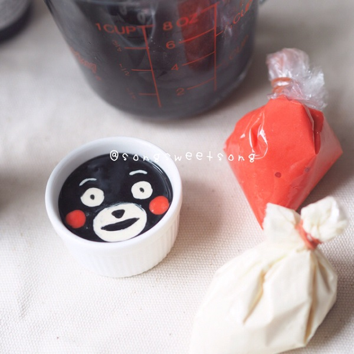

<คัพเค้กเมนูเบเกอรี่ทรงเสน่ห์ขนาดพอดีคำน่ารักฟรุ้งฟริ้ง ลองมาดูไอเดียจับคัพเค้กมาวาดหน้าการ์ตูนให้มุ้งมิ้ง เนื้อนุ่มฟู ทำง่าย ๆ ใช้แค่ชุดนึ่ง ใครเห็นก็ชอบ ของดีแบบนี้ต้องบอกต่อ
วิธีทำคัพเค้กถ้วยเล็ก ๆ ไม่ว่าจะเป็นคัพเค้กวานิลลา คัพเค้กช็อกโกแลต หรือคัพเค้กเนยสด บีบครีมแล้วแต่งด้วยเกล็ดน้ำตาลทั่วไป เราเห็นจนชิน ทำจนเอียน และกินจนเบื่อแล้ว วันนี้กระปุกดอทคอมขอนำเสนอวิธีทำคัพเค้กตัวการ์ตูนสุดน่ารัก ไอเดียของ คุณ SongSweetSong สมาชิกเว็บไซต์พันทิปดอทคอม ที่เนรมิตคัพเค้กบ้าน ๆ ให้มีหน้าตาเป็นการ์ตูนนูน ๆ สามมิติสุดน่ารัก ทั้งหน้าแมวมุ้งมิ้ง หมีคุมะมงจอมป่วน และหมีริรัคคุมะจอมขี้เกียจ เนื้อนุ่ม ๆ ฟู ๆ ทำง่าย ๆ แถมยังไม่ต้องใช้เตาอบอีกด้วย ใครอยากทำเป็นของขวัญสำหรับคนพิเศษก็รีบเข้ามาจดสูตรได้เลยค่ะ
คัพเค้กฟรุ้งฟริ้ง แบบไม่ง้อเตาอบ by Song Sweet Song โดยคุณ SongSweetSong สมาชิกเว็บไซต์พันทิปดอทคอม
• คัพเค้กหน้าแมวเหมียว
• มาลองทำเค้กนึ่งเป็นหน้าการ์ตูนนูน ๆ ฟู ๆ น่ารัก ๆ กันดูค่ะ มันง่ายมากจริงๆ
ส่วนผสม คัพเค้กฟรุ้งฟริ้ง (สูตรนี้ใช้ถ้วยขนาดกว้าง 3 เซนติเมตร ได้ 5 ถ้วยค่ะ)
• ไข่ไก่ 1 ฟอง
• น้ำตาลทราย 30 กรัม
• นมสด 60 ซี.ซี.
• แป้งแพนเค้กสำเร็จรูป 100 กรัม
• เนยจืดละลาย 15 กรัม
• แป้งสาลีอเนกประสงค์ 1 ช้อนโต๊ะ
• สีผสมอาหารสีแดงและสีดำ
วิธีทำคัพเค้ก
• ตีไข่ไก่กับน้ำตาลทราย
• ตามด้วยนมสด
• ใส่แป้งแพนเค้กสำเร็จรูปลงไป
• ใส่เนยละลาย
• ตีจนเนื้อเนียน เท่านี้ก็จะได้เนื้อแป้งที่จะทำเป็นตัวเค้กแล้วค่ะ
วิธีแต่งหน้าคัพเค้ก
• ต่อมาเป็นส่วนสำหรับแต่งหน้าเค้กค่ะ แบ่งส่วนผสมแป้งที่ผสมแล้วออกมา 3 ช้อนโต๊ะ

• ผสมกับแป้งสาลีอเนกประสงค์ 1 ช้อนโต๊ะ
• แล้วนำมาแบ่งออกเป็น 2 ถ้วย
• ใส่สีผสมอาหารสีแดง และสีผสมอาหารสีดำลงไปคนให้เข้ากัน
• ตักแป้งสีใส่ถุงบีบ
• ตักส่วนผสมแป้งใส่พิมพ์ 3/4 ของถ้วย
• บีบสีดำและสีแดงแต่งหน้าให้สวยงาม
• นำไปนึ่งประมาณ 8-10 นาที (ระยะเวลาขึ้นอยู่กับขนาดของพิมพ์ที่ใช้ค่ะ ถ้าพิมพ์ใหญ่ก็จะใช้เวลามากขึ้น)
• เคล็ดลับ : ใช้ผ้าห่อฝาของหม้อนึ่ง หรือใช้กระดาษอเนกประสงค์สำหรับที่ใช้ในครัวคลุมปิดขนมก่อนจะปิดฝา (แต่ตอนนึ่งเสร็จต้องค่อย ๆ เปิด อย่าให้กระดาษอเนกประสงค์ตกลงไปโดนหน้าขนมนะคะ) เพื่อป้องกันไม่ให้น้ำหยดไปโดนหน้าเค้กค่ะ
• ต่อมาบีบส่วนหูค่ะ
• โดยบีบแป้งบนกระดาษไข นำไปนึ่งประมาณ 3-4 นาที
• จากนั้นใช้มีดแซะส่วนหูออกมาตกแต่งบนเค้ก

• เท่านี้ก็เรียบร้อยค่ะ
มีตัวอย่างเค้กนึ่งแบบต่าง ๆ ที่เคยทำมาให้ดูด้วยค่ะ ลองทำกันดูนะคะ
• คัพเค้กหมีคุมะมง

• คัพเค้กหมีริลัคคุมะ
ว้าว… เป็นใคร ๆ ก็ตื่นเต้นที่ได้เห็นคัพเค้กฟรุ้งฟริ้งที่เป็นหน้าการ์ตูนสามมิติ เนื้อฟู ๆ แบบนี้จังเลย เป็นอีกไอเดียสำหรับคนชอบทำเบเกอรี่มาก ๆ ชิ้นเล็ก ๆ กินง่ายพอดีคำ ที่สำคัญส่วนผสมไม่เยอะ ไม่ต้องใช้เตาอบด้วยนะคะ แบบนี้มีหรือจะพลาด
ขอขอบคุณข้อมูลและภาพประกอบจาก
เว็บไซต์ : คุณ SongSweetSong สมาชิกเว็บไซต์พันทิปดอทคอม
Copyright © EAT&EAT nc. สงวนลิขสิทธิ์